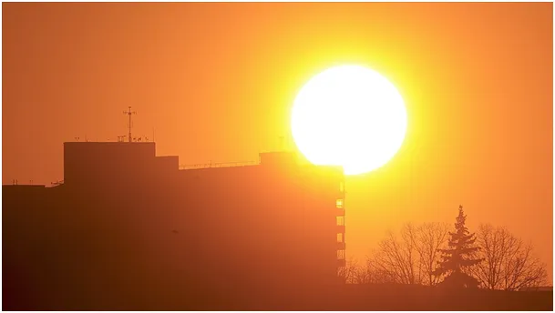
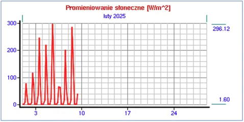
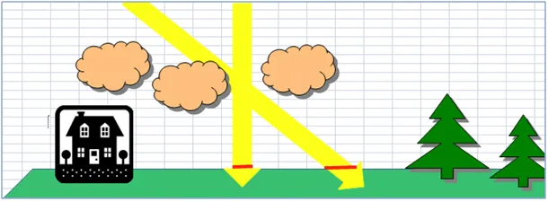
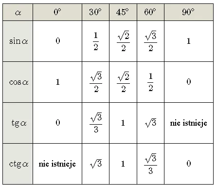
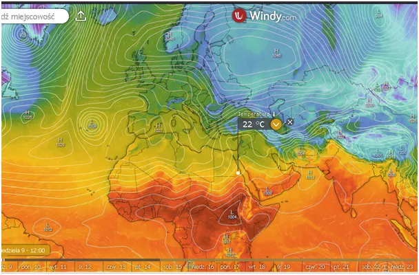

Dlaczego świeci a nie grzeje?
Słońce coraz wyżej nad horyzontem i jego silny blask utrudnia np. prowadzenie samochodu, ale nie czujemy wyraźnie jego ciepła. Natężenie promieniowania słonecznego mierzona jest w watach na metr kwadratowy. Obecnie w Polsce oscyluje wokół 300, a w południe nawet 400 watów na metr kwadratowy. Dla całej Polski jest to 96 772 500 000 000 watów, a jeśli przyjąć, że świeci tak przez 4 godziny mamy energię 387 090 000 000 000 watogodzin. Jest to energia, która w Polsce kosztuje 464 508 000 000 zł.

Niestety położenie Polski powoduje, że o tej porze roku Słońce pada na powierzchnię naszej ziemi pod kątem ok. 22 stopni, co w funkcji sinus daje tylko 0,37 mocy, z jaką by grzało naszą ziemię światło, gdyby padało pionowo.

Ale to nie wszystko, światło które przecina atmosferę ostrym skosem w porównaniu do tego, które świeci prosto z góry, ma kilka razy większą szansę, że trafi na losowo rozsiane chmury. Dla promieni skośnych atmosfera jest najzwyklej wielokrotnie grubsza. W ten sposób nasze 0,37 mocy słońce musimy jeszcze podzielić przez "kilka", co daje nam skutek kilka razy słabszy niż to, co poczujemy latem. Mało tego czas ekspozycji na Słonce latem to kilkanaście godzin na dobę, a czas nocnego stygnięcia, to tylko kilka, odwrotnie niż obecnie.

W ten sposób zmiany w bilansie ciepła w naszej okolicy zmienią się radykalnie. Ciekawostką jest fakt, że gdyby ziemska doba trwała tylko o dwie godziny dłużej dobowa zmienność temperatur zabiłaby wszelkie życie na naszej planecie. Analogicznie niewielka zmiana odległości Ziemi od Słońca radykalnie zakończyłaby cud życia. Lista tych "przypadkowych" parametrów bez których nie byłoby życia jest bardzo długa, np. masa i odległość Księżyca, procentowa ilość poszczególnych pierwiastków w Słońcu itp. itd.
Zatem, gdzie jest wiosna? Dziś gdzieś w południowym Egipcie, tam gdzie w nocy temperatura nie spada poniżej 12 st. C i wegetacja trwa całą dobę.

Północna Afryka jest w tym roku pod wpływem północnych zimnych wiatrów i jeszcze nie wiemy, czy to przyspieszy ogrzewanie naszej półkuli, czy spowolni, bo wszytko zależy od struktury zachmurzenia na różnych szerokościach geograficznych i prądów oceanicznych. Za kilka dni cyrkulacje tam się zmienią i wiosna szybko dotrze do delty Nilu i potem do Palestyny, gdzie zimne noce dla żyjących w gruzach są dodatkową tragedią.
Paweł Klimczewski